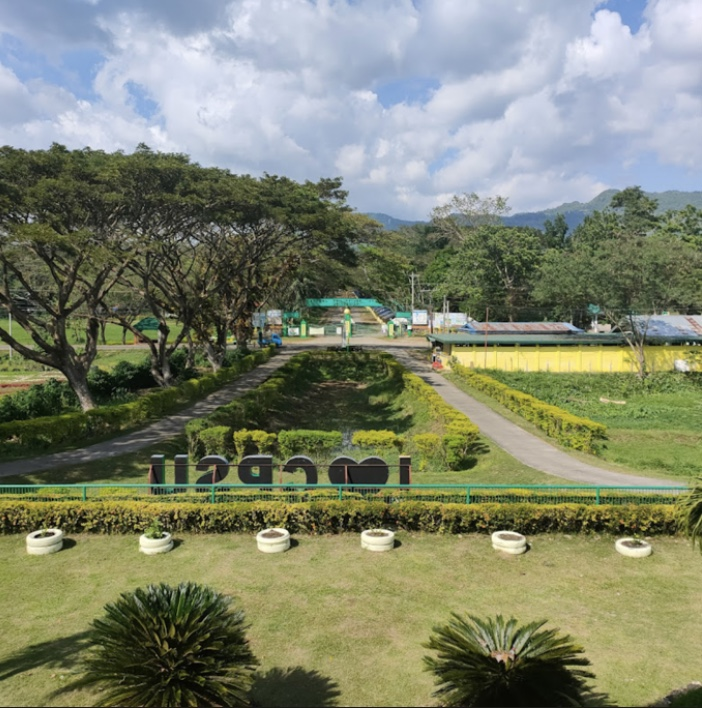
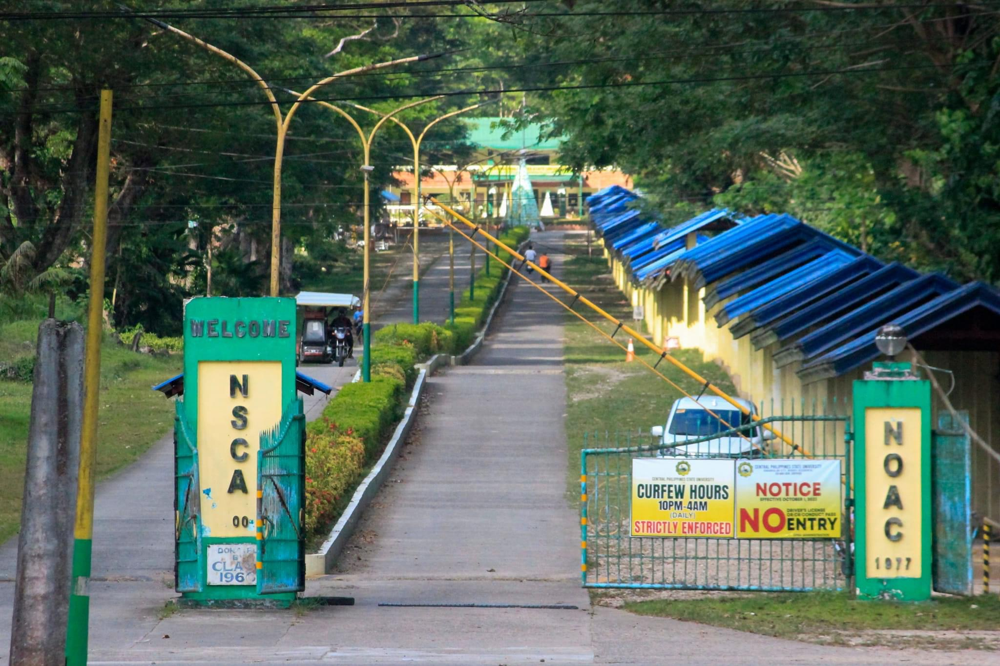

Central Philippines State University (CPSU) stands as a testament to educational innovation and community empowerment in Negros Occidental, proudly encompassing 10 campuses and Extension classes, all ISO-accredited. This sprawling network not only signifies a commitment to excellence but also serves as a transformative bridge, connecting local communities to the tangible realization of their aspirations. CPSU's dedication to providing quality and advanced higher education reflects a profound understanding of the unique needs of its neighboring areas. Firmly rooted in its mission, CPSU is on an inspiring journey to evolve into a technology-driven multi-disciplinary university by 2023. In the vibrant tapestry of Negros Occidental, CPSU emerges as a catalyst for societal progress, fostering dreams and paving the way for a future where education becomes the cornerstone of community development.
The Central Philippines State University, also referred to by its acronym CPSU, is a public higher education institution in the Philippines. Its main campus is located in Kabankalan, Negros Occidental, and has 9 other satellite campuses in different cities and municipalities in the province.
The Central Philippines State University (CPSU), formerly known as Negros State College of Agriculture, is a public state university in the Philippines. Its main campus is located in Kabankalan, Negros Occidental. CPSU started as Negros Occidental Agricultural School (NONAS) and was dubbed as the 1st Agricultural Institution in the country establish by a Filipino Superintendent in the name of Jose F. Crisanto immediately after World War II in 1946. The institution was converted to Negros Occidental Agricultural College (NOAC) by virtue of Presidential Authority on September 6, 1977. NOAC then was converted into state college known as the Negros State College of Agriculture (NSCA).